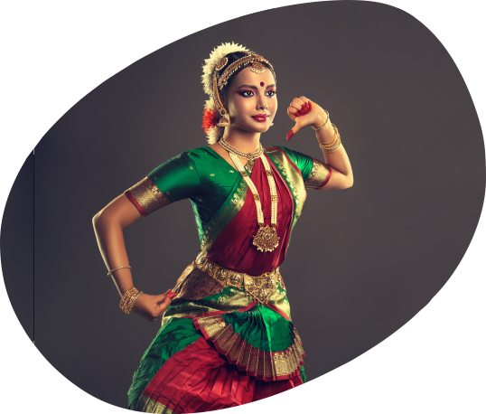
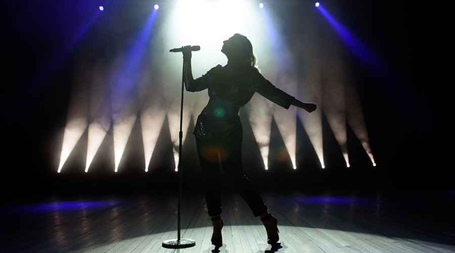
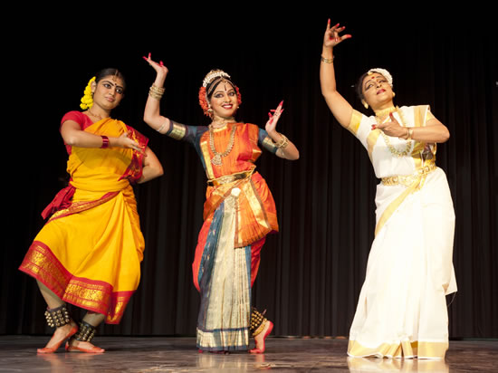
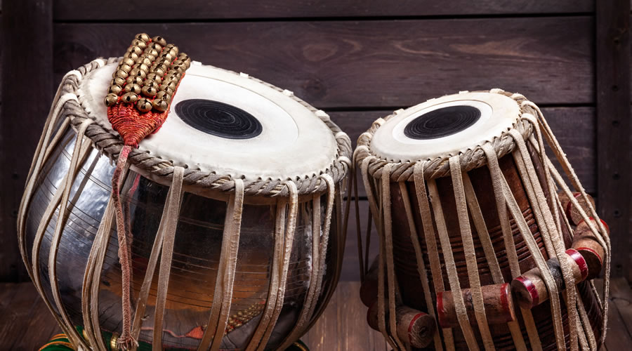

Devised with keeping the trends of the entertainment industry and the needs of an artist in mind, this course is built for those students who fully intend on pursuing a career in the entertainment industry. A career in performing arts usually begins as a hobby in the early formative years of a student’s life.
01


Duration:
3 Years (6 Semesters) / 4 Years (8 Semesters)
Affiliation:
PES University
Campus:
Ring Road (RR) Campus
Admission Test:
PES Entrance Test
Approval Body:
UGC
Ranked #1
#1 University in Karnataka (New Universities under 5 years) by KSURF
PESU is NAAC A+ Accredited
PES University is accredited with A+ grade in NAAC, a national level accreditation body which is an autonomous institution under University Grants Commission (UGC)
Ranked #1
#1 B School in Karnataka – Times of India B School Rankings 2021
Get In Touch
Have questions about Bachelor of Arts (BA) in Performing Arts admissions?
Share a few details and our admissions counsellors will walk you through eligibility, fees, scholarships and the application timeline — no obligation.
- Fast Response — a counsellor calls back within 24 hours.
- One-on-One Guidance — personalised help with eligibility and documentation.
- No Obligation — ask questions before you decide to apply.
Enquire Now
Fill this in and we'll reach out shortly.
Overview
Bachelor of Arts (BA) in Performing Arts
The performing arts refer to art forms wherein artists use their voice, movements of their bodies, often concerning other objects, to convey artistic expression. Practitioners of performing arts today are often a part of the “entertainment industry”. Our history serves as an example of the role that performing art forms play in defining the very cultural and social fabric of the country for eons to come.
For ages, performing art forms have been honed under the guidance of masters in the domain with performances at a variety of events. Over the past few decades, the Entertainment Industry has revolutionized itself in terms of organization. Incoming artists must understand this structure that comes with the domain.
With a wide variety of Majors and Allied Areas in different art forms, a foundational understanding of the range of art forms and language courses, the Bachelor of Arts in Performing Arts degree at PESU aims to give the students a structured approach to pursue a career in the entertainment industry.
With performances, internship opportunities and a well laid out capstone project, the degree would give the students a flavor of the industry in which they aim to build their careers.
BA in Performing Arts is offered in two variants : -
- Three Year BA in Performing Arts
- Four Year BA in Performing Arts with Honors



Eligibility
50% aggregate score in 10+2 or equivalent in any stream from a recognized board
Why PES University
Key Differentiators of this program at PESU
Variety of foundational courses in the earlier semesters to help students understand the breadth of the domain
Conversational Language courses, especially in Kannada and Sanskrit, to enhance the comprehensibility of cultural art forms
Courses aligned towards Business, Social Media, Mass Media and so on, to help the artist build a brand and persona for their art
Major and Allied courses in the domain of Music, Dance and Theatre to build expertise
Practical sessions to enhance understanding of major and allied topics
Mandatory performances within and outside the college to help the artists build a platform for their work
Internship opportunities to give the students a feel for what the entertainment industry functions like (For Honors Students only)
About the Programme
Programme Highlights
01
Variety of foundational and language courses to guide the student in their initial exploration of the domain
02
Impeccably structured Business, Social Media and Mass Media courses to help the student build a brand for their art form
03
Practical Sessions and Mandated Performances to give the student a feel for demonstrating their art form
04
Internship opportunities at locations of repute to give the student an in-depth understanding of the industry (Honors Students only)
05
Well-structured Major and Allied courses in the domains of Music, Dance and Theatre
Is It For You?
Who should pursue this Program?
This course aims at helping the students harness this early founded passion and convert it into a feasible and prosperous career. Presently, this course aims to help those students with a passion for the Music, Dance and Theatre domains. It aids in helping the student convert their unstructured hobbies into a structured form, presentable at an industry level.
02This course is particularly designed to help the students achieve all-round development, not only in the field of performing arts but also in the understanding of languages and the necessary business acumen to build a successful career.
03Placements
Placement Opportunities & Career Assistance
The Placement Cell of the University will facilitate the placement of the graduating students in the corporate world / academic institutions / healthcare sector / entertainment industry, besides providing monetary assistance and ideation to the budding entrepreneurs to initiate start-ups through the PESU Venture Labs.
Presently, the department aims to motivate co-curricular activities in the form of Lab / Studio Sessions organized in addition to the theory coursework. The department also plans on a mandate of performances through the 6th, 7th & 8th Semester to help students get a feel for the work that goes into a Live Performance, on-stage and behind the stage. Internships are proposed during the 7th Semester(Honors Students only) to further improve student insights in the entertainment industry domain. A capstone project is proposed during the 8th Semester for students to present their art form to a panel of esteemed academia in their respective domains (Honors Students only)
Beyond the Classroom
Extra-Curricular/Co-Curricular Activities In The Program
Choose Your Path
Specializations Domains
The course currently aims to focus on the Music, Dance and Theatre Domains. To accomplish this, students will pursue foundational courses in their initial semesters to achieve breadth in the domain. Followed by this, students will pursue Major Areas and Allied areas in the domains of music, dance and theatre. The proposed set of major and Allied courses is as mentioned below.

Major Area:Carnatic Vocal / Violin/ Mridangam
Allied Area:Dance / Theatre
Major Area:Hindustani Vocal / Instrument
Allied Area:Dance / Theatre

Major AreaBharathanatyam
Allied AreaMusic / Theatre
Major AreaKathak
Allied AreaMusic / Theatre
Theatre
Dance / Music
Learning Approach
Program Design and Delivery Method
The program is proposed as an in-depth 3 Year Degree course comprising of 6 semesters or 4-year course comprising of 8 semesters in total with graduating students earning 120/160( respectively) credits in accordance with the National Educational Policy of 2020.
The program will be offered in three domains – music, dance & theatre.
The program will have:
Foundational Courses
– 6 Nos. (4 credits) , 2 Nos (3 Credits), 3 Nos (2 Credit)Mandatory Learning Courses
– 4 Nos. (2 credit)Language Courses
– 1 Nos. (2 credits)Common Courses
– 2 Nos (4 credits) for 3 yr degree / 3 Nos ( 4 Credits) for Honors 6 Nos (3 Credits) 6 Nos (2 Credits) for 3 Degree/ 12 Nos (2 Credits) for 4 Year honorsElectives
- Major Area – 4 Nos (5 credits) for 3 yr Degree OR 4 Nos ( 5 Credits) and 2 Nos ( 6 Credits) for 4 Yr HonorsElectives
- Allied Area – 4 Courses (4 credits)Internship (6 credits) for Honors
Capstone Project (6 credits) for Honors
How We Teach
Pedagogy Method

01
Classroom Teaching
02
Specialized Practical Training in Studios
03
Instructional Learning through Performances
04
Project Based Learning
Curriculum
Curriculum Structure
- Courses offered
- Indian Classical Context
- Indian Folk Context
- Synthesis Of Corporeal, Auricular and Emotive Behavior
- IKS in Performing Arts
- Solkattus & Mathematical Structures in South Indian Classical Percussion - I
- Constitutional Law (Mandatory paper)
- Courses offered
- Performing Arts Global Context
- Lexicon of Performing Arts
- Performative Art genres
- Nuances of Folk Arts
- Conversational Kannada
- Solkattus & Mathematical Structures in South Indian Classical Percussion - II
- Environmental Science (Mandatory paper)
- Courses offered
- Major Elective - I
- Allied Elective - I
- Puppetry
- Elements of Design in Performing Arts - I
- DDigital Music Production
- Entrepreneurship and Innovative Practices - I
- Courses offered
- Major Elective - II
- Allied Elective - II
- Nuances of Folk Art - I
- Photography
- Pedagogy of Performing Arts
- Principles of Design in Performing Arts - II
- Entrepreneurship and Innovative Practices – II
- Courses offered
- Major Elective - III
- Allied Elective - III
- Elemental Psychology
- Fundamentals of Cinema
- Aesthetics - Indian
- Research Communication in Performing Arts
- Internship ( Summer)
- Courses offered
- Major Elective - IV
- Allied Elective - IV
- Therapeutic Aspects in Performing Arts
- Nuances of Folk Arts
- Aesthetics - Western
- Performance Practicum - I
- Courses offered
- Major Elective - V
- Project Work/ Dissertation
- Practicum in Performance - II
- Advance Digital Music Production
- Courses offered
- Major Elective - VI
- Internship
- Dance Movement Therapy
- Practicum in Performance - III
Careers
Future Career Prospects after completing the Program
Actors dominate screens, big and small, all over the world. With the prowess to demonstrate emotion on demand along with a demonstration of inter-disciplinary arts, being an Actor, not only helps the student gain commercial success, but also Social success
Dancers use their ability to understand the flow of music to bring to life words strung to a tune. Not only do they perform in the Cinema and Theatre world, but dancers are renowned worldwide for their talent and are often invited to perform at a variety of cultural festivals.
Being an Actor or a Dancer is an either-or situation for everyone but Musical Theatre Performers. They bring to life a different form of theatre driven by the ability to Sing, Dance and Act. In recent years, there has been a visible boom in the audience of the Musical Theatre domain.
Like Speech Therapists, these therapists use a variety of art forms to help their patients to express themselves. Due to repressive tendencies, certain patients can only express themselves in non-conventional means.
A theatre director is responsible for putting together a brilliant theatrical performance. Not only are they responsible for critiquing actors and building the play but are also responsible for the logistics and planning of the whole event.
We often watch Movies and are left awe-struck with the direction and growth of the movie. Most, if not all, of this credit, is due to the team of Screenwriters who build movies from scratch and help breathe life into all the characters
Arts administrators organize art activities and services and ensure they are successful. They work for various organizations such as theatres or museums.
Performing Artist can be part of the educational institutions as facilitator.
Another performing arts career that requires organization skills is that of a theatre stage manager, in charge of making sure shows run smoothly. A manager requires great people skills and the ability to network to run the show. and many more…
Financial Support
Merit scholarships, awarded on performance
Over ₹140 crores in merit scholarships have been given to PES University students since 2014.
Merit Scholarships
Awarded on CGPA / SGPAScholarship
50%
Prof. MRD Scholarships
Merit Certificate + 50% Tuition Fee Refund for Top 5% of the Students based on their CGPA.
Scholarship
40%
Prof. CNR Rao Scholarships
Merit Certificate + 40% Tuition Fee Refund for the next 20% of the Students based on their SGPA.
Scholarship
7.75+
Distinction Awards
Merit Certificate for Students securing 7.75+ SGPA.
PES Loyalty Program
Awarded on family / institutional ties, every year of studyLoyalty
30%
PES Employees
Children of full-time staff, 5+ years employment.
Loyalty
20%
PES Institution Students
Graduates of any PES institution or sister concern.
Loyalty
10%
Siblings of Students
Siblings of currently enrolled PES students.
Loyalty
10%
Alumni Family
Siblings and children of PES University alumni.
University Highlights
Recognition beyond the programme
The accreditations and rankings behind PES University as a whole.
Ranking
#1
University in Karnataka
Among new universities under 5 years, ranked by KSURF.
Accreditation
A+
NAAC Accredited
PES University holds NAAC's top-grade accreditation nationally.
Ranking
#1
B-School in Karnataka
Times of India B-School Rankings, 2021.
Recognition
2nd
Most Preferred B-School
Second only to IIM Bangalore among B-School aspirants, per Times of India.